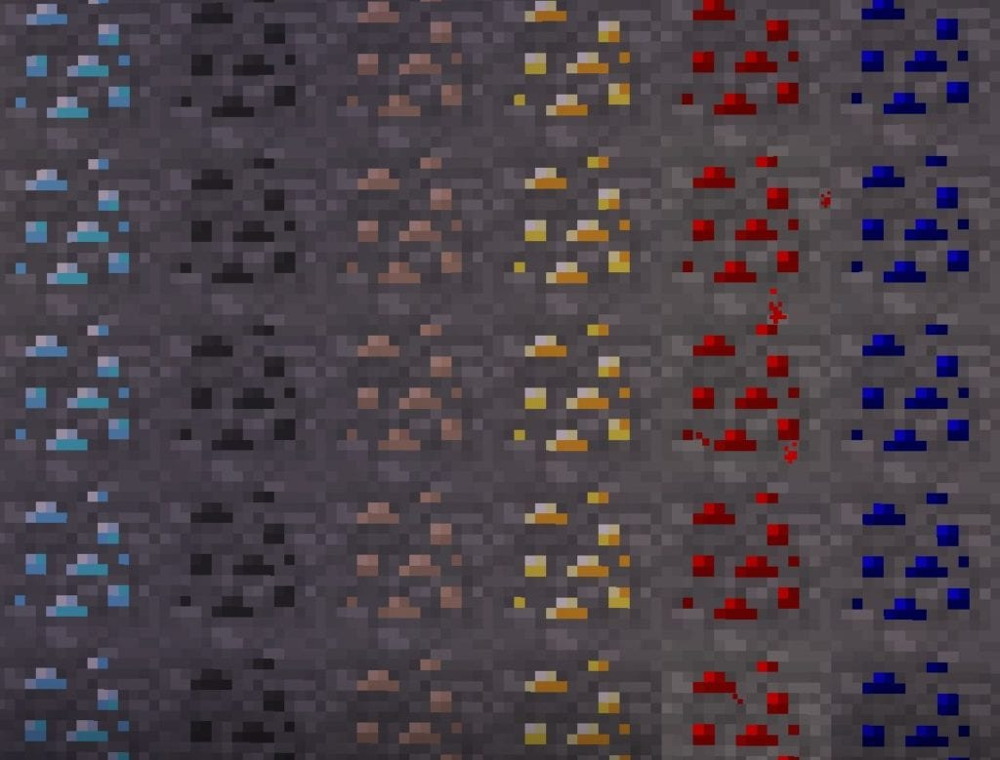
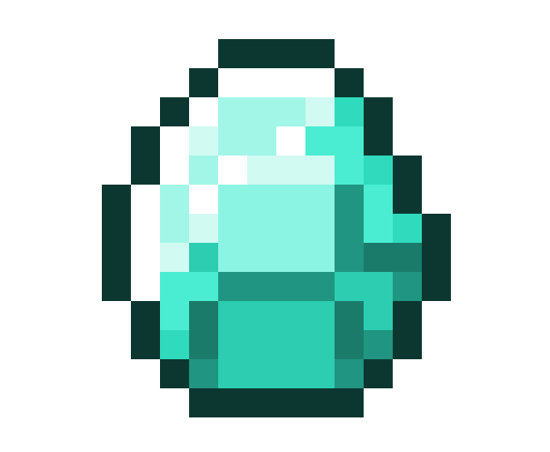

Modest Guides to Minecraft: Mining
Mining:
Mining in Minecraft is largely the most important thing.
You need resources to get things done; make weapons and armor, build your base, and almost everything else that’s needed in Minecraft.
Basics:

They start out as ore blocks and once you mine the blocks, you get ore. Ore can be smelted down to ingots using a furnace (you build a furnace by mining out cobblestone with a wooden axe, it takes eight cobblestone to make one– so the center should be the only area unfilled). You’ll also need some sort of lighting source (wooden block, wooden twig, coal, you can even sac your wooden weapon), then you just add the ore and your lighting source to the furnace and wait for the burnage.
While you’re waiting why not garden, or even build something? It doesn’t take too terribly long to smelt but, I always add as much as I can, then go do something else that’s needed.
Tip: Do not dig straight down, you WILL regret it.
| Ore Types | Common Layers Found | Pickaxe Type | World Location |
|---|---|---|---|
| Coal | Layer 128 | Wood | Overworld |
| Diamond | Layer 12 | Iron | Overworld |
| Emerald | Layer 29 | Iron | Overworld |
| Iron | Layer 64 | Stone | Overworld |
| Lapis Lazuli | Layer 23 | Stone | Overworld |
| Quartz | Layer 120 | Wood | Nether |
| Obsidian | Bottom of World | Diamond | Overworld |
Important Ore:
To me, the most important ore of them all is Iron. Iron is needed for everything, and can make excellent base armor.
Diamond is the second most important, it makes even better armor and you will need a diamond pickaxe to obtain obsidian.
I say base, because you can enchant your armor and weapons to enhance them– making them immensely better.
Obsidian:

There are a few things that I should explain, you need to work up to Obsidian and once you do you will need a few things to either get to the Obsidian, or to make your own. Obsidian is formed by lava and water: you will need to get a bucket of water and find lava that isn’t moving, then you will need to hit that non-moving block with flowing water. This is the simplest way to make it, you will need Obsidian to get to The Nether.
You can also make your own lava pit, making sure that the lava isn’t moving and add moving water to that lava pit. This is also a simple way.
When the Obsidian is made, you need a diamond pickaxe. It’s the only thing that works with Obsidian, any other type and you will be wasting resources and time. Even when you use a diamond pickaxe, it does take some time. You can enchant said pickaxe to make it more efficient and faster mining.
Mining Tips/Advice:
- Make sure you have a light source, otherwise there will be monsters spawning. Remember, they like the dark. Additionally, you can use lights to keep track of where you are: you can make some sort of design at each mining entrance, or you can just remember where you are. You can also make wooden signs and put them in the entrance and the like.
- Take food with you! Trust me, it will be a pain to go back to your basecamp, get food, and come back. You’ll wind up getting caught up doing other daily “chores” around the house.
- If you’re playing with more than one person, split the duties up. They can work around the house, while another goes to mine. You can both mine together as well, gathering more ground making the work seem less tedious.
- If you’re looking to mine quickly and efficiently, strip mine. Make your entrance, and just go in a straight line. This is what I’ve found to work best for myself.
- Make sure you make stairs, or a ladder down. You don’t want to fall into a giant pit and die. Eventually you will forget about it. You can even cover them with trap doors, put a wooden sign up, or close it with dirty. Just remember not to dig in that area.
- Take extra tools with you, depending on how long you mine your pickaxes will degrade. If you have someone else you’re playing with, you can always ask them to TP (teleport) to you and bring you food, and whatever else is needed. Sometimes they won’t do it for you, it just depends on how nice your friends are.
- Most importantly, have fun! Minecraft is a wonderful world of adventure!